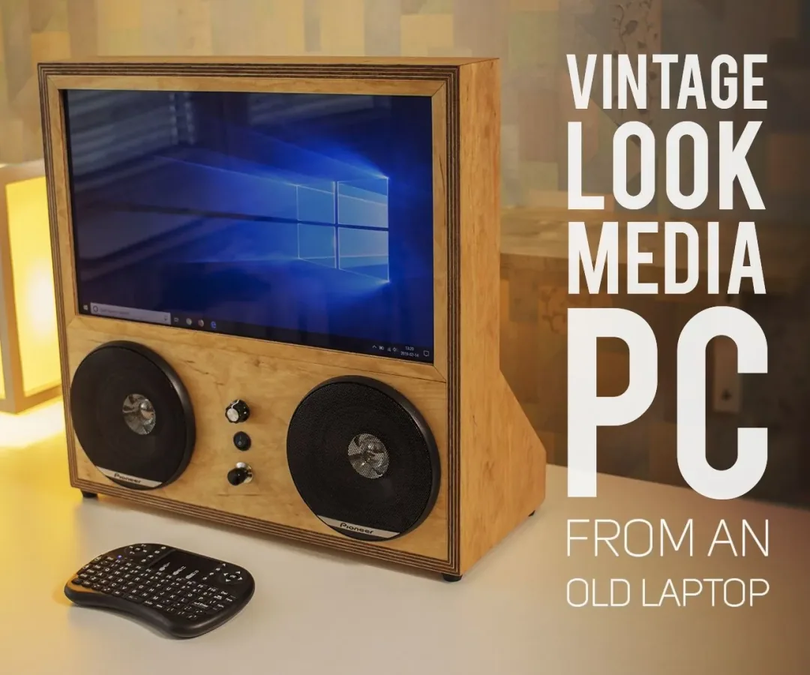

Rehouse an entire older laptop as a vintage-style media PC
- A thirty-step build reuses a laptop motherboard, IPS display, Wi-Fi antennas, camera and speakers in a new wooden enclosure with media controls.

- Record L42
- Sources reviewed 2026-10-21
- Hands-on status No KitAgain hands-on hardware test
- 0/5 dimensions have verifiable sources
- The current review supports only docs/community. Other dimensions remain null, so fewer than three evidenced dimensions means this route is not yet rated.
Decide before you build
- Current stage A thirty-step build reuses a laptop motherboard, IPS display, Wi-Fi antennas, camera and speakers in a new wooden enclosure with media controls.
- Practical readiness When the board and screen work, many original parts can become a fixed media terminal.
- User value Reuses more of the original machine than a panel-only conversion and documents the full mechanical process.
- Follow-up recommendation Start adapter-powered without the battery; finish the enclosure after function and temperature remain stable.
Device fit and limits
Known fit or worth checking
- Older laptops with working display, board and speakers
- Builders able to fabricate an enclosure and redesign cooling
Not established or unsuitable
- Machines with failed motherboard or panel
- Copying battery-pack work without lithium safety experience
Gaps, next step, and risk
- Why it remains E0 The author opens a battery pack and evaluates 18650 cells; that step is not suitable for general copying, and software versions may be old.
- Next review step Build an adapter-powered version first, verifying cooling, display cable, speaker amplifier, autostart and remote control.
- Risk and stop condition Do not open and rebuild unknown laptop battery packs without lithium expertise; secure bare boards and power components.
What each link contains
- Thirty-step complete build ↗step-by-step-buildCovers teardown, display, antennas, camera, speakers, woodworking, remote and risky battery work.https://www.instructables.com/Vintage-Look-Media-PC/